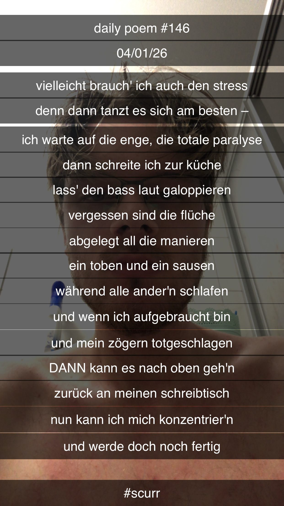

Vielleicht brauch' ich auch den Stress
[146]Vielleicht brauch' ich auch den Stress
Denn dann tanzt es sich am besten –
Ich warte auf die Enge, die totale Paralyse
Dann schreite ich zur Küche
Lass den Bass laut galoppieren
Vergessen sind die Flüche
Abgelegt all die Manieren
Ein Toben und ein Sausen
Während alle Ander'n schlafen
Und wenn ich aufgebraucht bin
Und mein Zögern totgeschlagen
DANN kann es nach oben geh'n
Zurück an meinen Schreibtisch
Nun kann ich mich konzentrier'n
Und werde doch noch fertig
